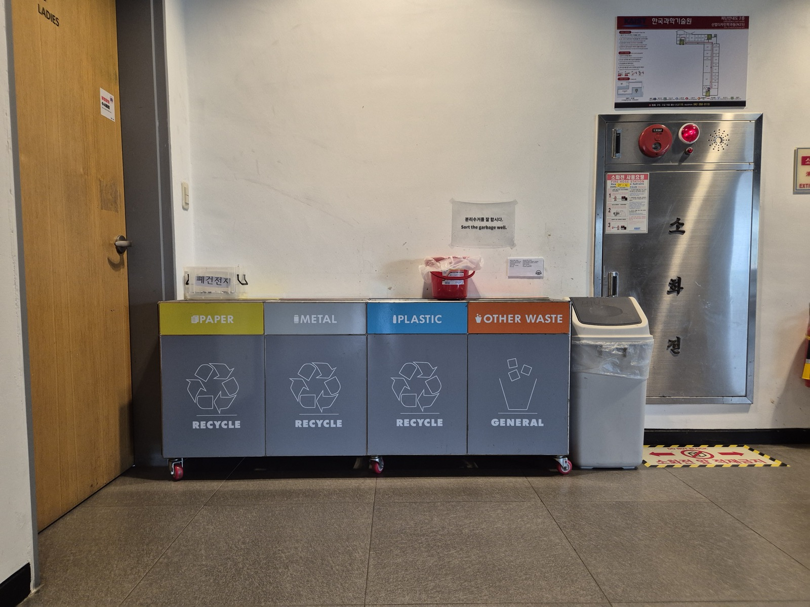
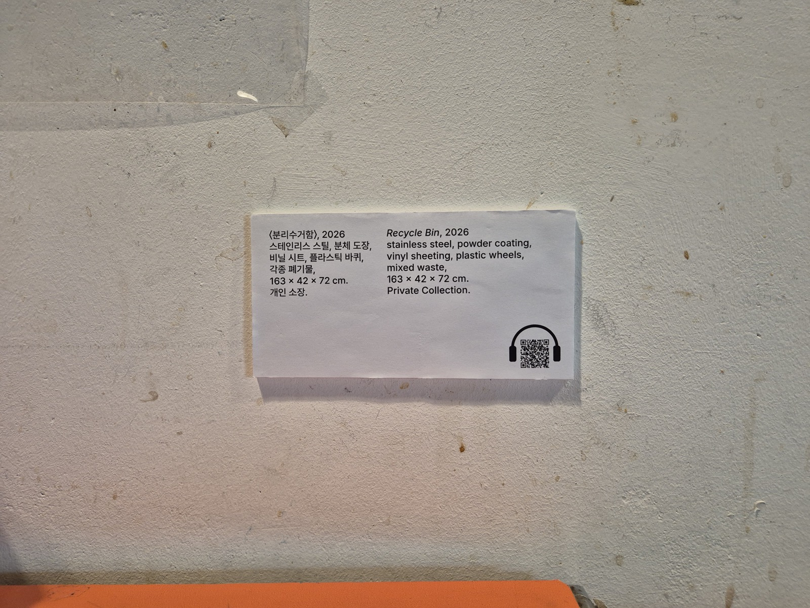
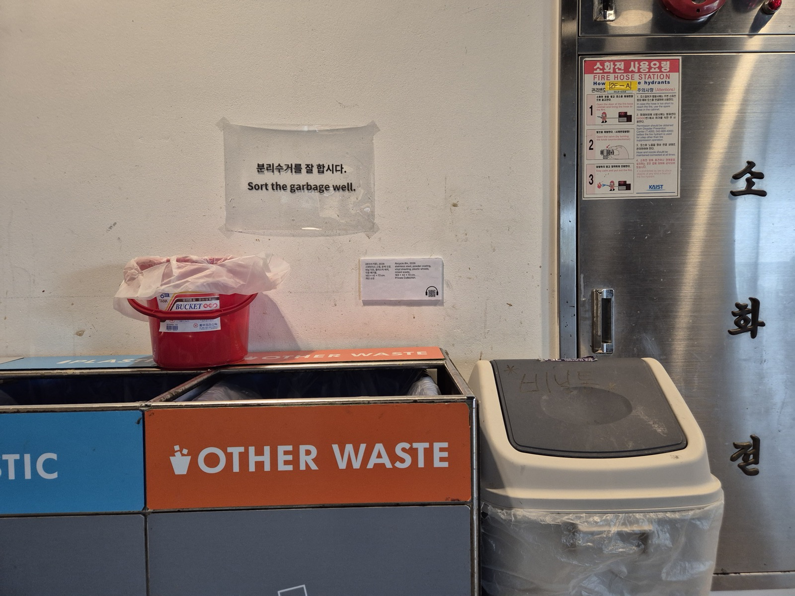

People come to this corner with a single purpose: to throw something away. They do it, and they leave. The site exists to be used without thought, and it is.

I wanted to make someone hesitate.
The project consists of attaching a museum style caption right next to the recycle bin on the 2nd floor of N25 building. It transfers an authority onto an object everyone ignores. For a moment, the disposal site becomes something sacred. The QR code in the caption links to an audio guide page that describes the recycling bins as if they were actual works of art.

